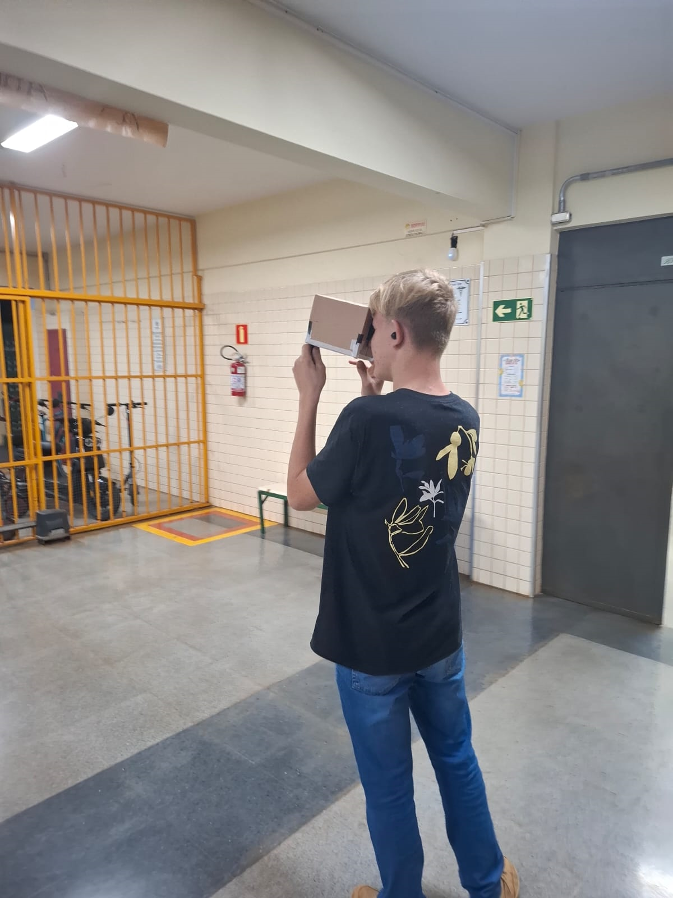
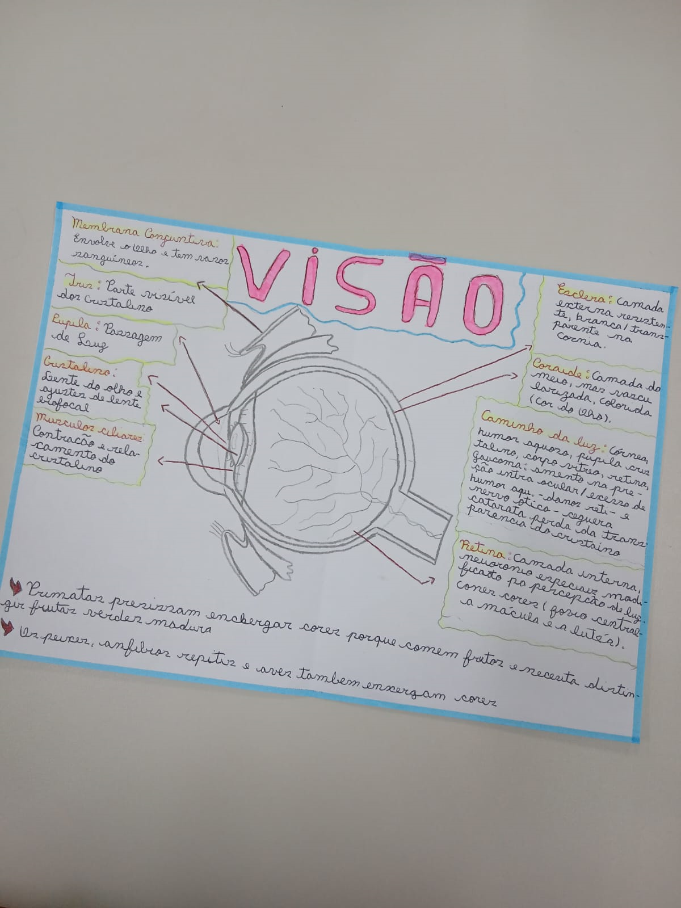

Meus projetos

Meu disco de Newton Personalizado
O disco de Newton é um dispositivo ótico circular dividido em setores coloridos que demonstra que a luz branca é formada pela composição de todas as cores do espectro visível. Quando girado em alta velocidade, as cores se misturas visualmente na retina devido à persistência retiniana, criando a ilusão de que o disco se tornou branco.

Câmara escura e o olho humano
A câmara escura é uma caixa fechada com um pequeno orifício em um dos lados. Quando a luz atravessa esse orifício, ela projeta a imagem do objeto na parede oposta da caixa. O olho humano capta a luz e a transforma em sinais que são enviados ao cérebro.

Aspectos do olho humano
O olho humano é um órgão responsável pela visão e possui estruturas que trabalham juntas para captar a luz e formar imagens.

semafaro
A ideia de utilizar formas geométricas diferentes é muito interessante porque transforma o projeto em um sistema que transmite a informação por mais de um elemento visual. Assim, mesmo que uma pessoa tenha dificuldade para distinguir determinadas cores, ela poderá utilizar a forma geométrica e a posição do sinal como informações complementares.